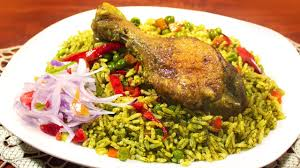
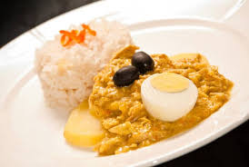
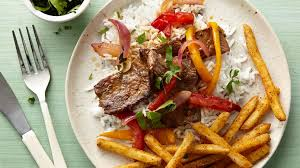

Arroz Con Pato
It's green rice is one of the most famous dishes in Chiclayo, north of Lima. Cooks in this region use the rice harvested in local farms, fragrant cilantro leaves -never the stems-, peas, and a well fed female duck, to make this legendary entree.
 SEE THE INGREDIENTSAji de Gallina
Aji de gallina is a delicious Peruvian classic—slightly spicy and bright yellow from the famous aji amarillo peppers, and rich from the unusual cream sauce made with ground walnuts. This dish is traditionally served over rice with boiled yellow potatoes and black olives.
Lomo Saltado
Lomo saltado is a popular, traditional Peruvian dish, a stir fry that typically combines marinated strips of sirloin with onions, tomatoes, french fries, and other ingredients; and is typically served with rice.
